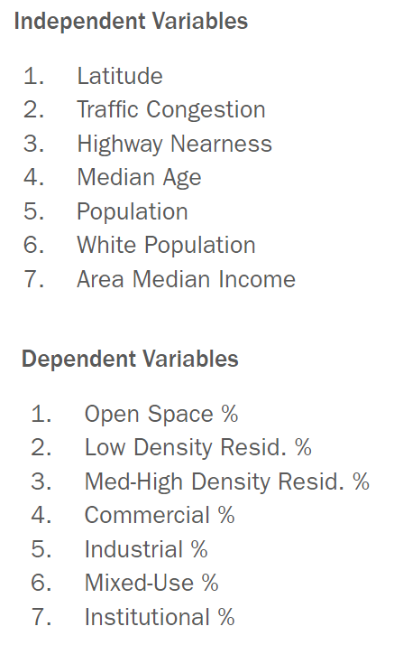

Welcome to my page! I've spent some time documenting my work, my interests, and random things about myself here. I hope you find what your looking for. Please do look around!
Aerotropolis Airport Supervised Learning
TLDR: Aerotropolis Airport Alliance wants to create a new city development near the Atlanta airport to increase visitor traffic, economic activity, and labor housing near the Atlanta Airport. I collected data on how other developments in Atlanta have designed their land use distributions for training data and utilized multiple linear regression along with optimization to propose a land use layout for this new airport development.
The circled region shows the airport's location. Much of the activity socially and economically happens in the north half ot Atlanta along transit corridors. The airport is a massive property but isolated to the south of Atlanta where there is comparatively little economic activity. Warehouses and low socioeconomic status housing is predominent in the airport's surroudning area.
Topics
Supervised, Machine Learning, Regression, Optimization, Smart Cities, Geospatial Analysis, Python, sklearn, Land Use, City Planning, Airport
Project Motivation
The Atlanta airport had historically been the busiest airport in the world by traffic seeing 75 million travelers in 2021. The airport is massive and is essentially a city to itself. The Aerotropolis is an alliance of organizations and companies that are invested in the airport region. They wanted to see the airport area more integrated into the fabric of Metro Atlanta so that more economic and person diffusion could occur between the city and the airport travelers. To further this effort, they wanted to explore created a new development close to the airport to essentially act as a bridge and community center for the airport and the Atlanta neighborhoods around it. The idea was to use novel machine learning techniques to help the design of this new city development. This project was presented to the Aerotropolis at the end of the term.
The specific site proposed for development is on the north end of the airport's property cluster where delta has certain buildings and shares it with the cities of Hapeville and College Park
Project Walkthrough
The project idea was to train an algorithm on how other successful developments in the Atlanta area have designed their land use for their populations within the local property development context of developing in Atlanta's property develop rules and environment. The methodology decided on took the form this flow chart shown below.
The first step was rather pain staking as some of the data was collected manually due to there not being much organized pre-existing public data on these popular developments. A multibariate regression was chosen due to its relative ease of understanding the feature's effects on the land use category proportion. Finally, the regression would output proportions that do not add up to 1, so an optimization model was then used to make sure the proportions made sense in addition to adding on additional contraints for a realistic land use output.
The response data collected and used to train this supervised model is shown below
There were 7 independent variables used for this model. The variables chosen weren't put through a robust process as this project was more a proof of concept than making sure the output was of reliable quality. The output variables for this model to decide were the most common types of land uses in the Atlanta Metro region which ended up being 7 as well due to making sure the balance between the number of independent and dependent variables was reasonable.

The regression model was built using sklearn packages and pandas in Python. It had the following resultsI then fed in the airport development's local independent variables to the model to get an initial output that would be fed into the optimization model to make it useful.
The optimization was also done in Python using the PuLP package. There were two different objective functions optimized. The first one/equation shown just makes sure the output percentages were interpretable. The second objective function/equation shows a pentalty term that makes it so that the large the land use variation from the current land use, the less likely the optimization will be to select it which models real life as trying for radical change produces more opposition than subtle change in city planning.
The land use proportion recommendation for the new site development by the airpot is shown below. It shows 5 different suggestions with different common conditions a development. No institutional means if there is no anchor institution in the development. No industrial means if there is no industrial zoning. Regre. scaling is if you skip the optimizatio model and just use the regression output. Penalty is if you add a pentalty term to account for opposition if zoning changes too much.
These numbers proportions are just a guideline on how city planners might design this space. City planners would still have to choose which exact parcels to fill these quota land use numbers. A different ML approach would have to be employed for a decision on every parcel. An example of which land uses are selected for which parcels in the development site could be as follows.
feel free to read the final project report here for more details

I wanted to thank you... for your leadership and dedication to this project... You really shaped this project and implemented a vision for it... I really trusted your work. You elevated this project beyond what would have been possible had we not had you on board.
— City of Atlanta Department of City Planning Supervisor

You did a great job... from coming up to speed quickly on how to best work with our team to completing all tasks efficiently and with a high quality of work. For every task given, especially larger ones, you were good at taking ownership of the project with minimal direction needed.
— East West Manufacturing Supervisor

I am very pleased with your performance, team spirit, self-starter mentality, and leadership. I am very pleased... with your ability to move a project from concept to reality... you have helped get us... strong infrastructure, technical capability, programming
— Center for Sustainable Communities Supervisor